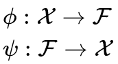
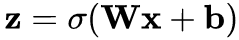
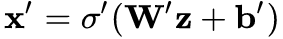

Autoencoder
|
João Vítor do Nascimento Universidade Federal de Alagoas joao.vitor@arapiraca.ufal.br |
Introdução
- Rede Neural
- Redução de Dimensionalidade
- Aprender uma representação (Código)
- Reconstrução
Duas etapas
- Compactar dados de entrada
- Descompactar em algo que corresponda de maneira próxima aos dados originais

Codificador e Decodificador



w -> Matriz de peso; b -> vetor
Denoising autoencoder
- Entrada corrompida
- Recuperar a entrada original sem distorção (Boa representação)
Treino
-
Para cada entrada X
- Passe de feed-forward para computar ativações em todas as camadas ocultas
- Em seguida, na camada de saída para obter a saída x'
- Desvio de x' da entrada x
- Tipicamente usando erro quadrado
- Back propagation
Problemas
- Reconstruir a média de todos os dados de treinamento (quase sempre)
-
Solução
-
Usar pesos iniciais que se aproximam da solução final
- Pré-treinamento
-
Usar pesos iniciais que se aproximam da solução final
-
Camadas ocultas maiores que a camada de entrada
-
Autoencoder aprende a função identidade
- Se torna inútil
- Estudos mostram que se aprende em casos como esse
-
Autoencoder aprende a função identidade
Usos
A deep learning framework for financial time series using stacked autoencoders and long-short term memory
Dúvidas?

=)